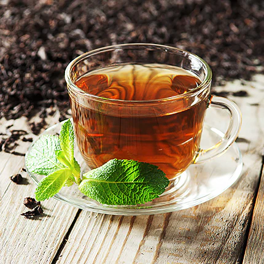

About Tea
Tea is one of the most popular beverages in the world, known for its rich flavors and health benefits.Tea's origins can be traced to East Asia, with China playing a key role in its early development and spread.Tea is appreciated not just for its taste but also for its potential health benefits and cultural significance in many societies.

Tea is made from the leaves of the Camellia sinensis plant, which are processed in various ways to create different types of tea. The main types include green, black, oolong, white, and herbal teas.Various types of tea, like black, green, white, and oolong, exist, each with distinct flavors and processing methods.
Types of Tea
Tea can be broadly categorized into six main types: white, green, oolong, black, dark (or puerh), and yellow. Each type has unique characteristics based on the processing methods used.
Black Tea
Fully oxidized leaves, resulting in a bold flavor and deep color. Often enjoyed plain or with milk.
Learn MoreBrewing Methods
🫖 Infusion:
Steeping tea leaves in hot water.❄️ Cold Brew:
Steeping tea in cold water for several hours.🍶 Gong Fu:
A traditional Chinese method using small teapots and multiple infusions.Brewing Tips:
- Use fresh, filtered water for best taste.
- Pre-warm your teapot or cup.
- Adjust steeping time to taste preference.
- Don't squeeze the tea bag—it can release bitterness.
Health Benefits of Tea
| Benefit | Description | Recommended Amount |
|---|---|---|
| Antioxidants | Rich in polyphenols that help protect cells from damage | 2-3 cups daily |
| Heart Health | May lower blood pressure and reduce risk of heart disease | 2-4 cups daily |
| Hydration | Helps keep the body hydrated while providing flavor | 1-5 cups daily |
| Mental Alertness | Contains caffeine and L-theanine for improved focus and calm | 1-3 cups |
| Weight Management | May support metabolism and fat burning | 2-3 cups daily |